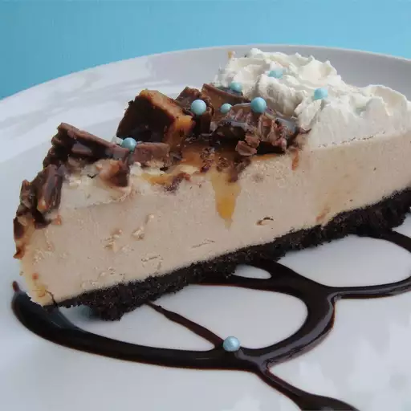

Home
Peanut Butter Cookie Pie

Description
Smooth peanut butter mixture on a baked chocolate cookie and cinnamon crust in a pringform pan. Serve with peanut butter cups, whipped cream, chocolate, and caramel syrup topping. The cook time would be 10 mins.
Ingredients
- 18 cream-filled chocolate sandwich cookies (such as Oreo), crushed
- 1 1/2 tablespoons butter
- 1/2 teaspoon ground cinnamon
- 1 (8 ounce) package cream cheese, softened
- 1 cup confectioners' sugar
- 1 teaspoon vanilla extract
- 1 cup creamy peanut butter
- 3 cups frozen whipped topping, thawed
- 3/4 cup frozen whipped topping, thawed
- 2 tablespoons chocolate sundae syrup (such as Smucker's)
- 2 tablespoons caramel sundae syrup (such as Smucker's)
- 4 peanut butter cups (such as Reese's), chopped
Steps
- Preheat an oven to 350 degrees F (175 degrees C). Mix the chocolate cookies with the butter and cinnamon in a bowl. Press mixture firmly into the bottom of a 9-inch springform pan.
- Bake in the preheated oven until the crust hardens, about 8 minutes. Set aside to cool.
- Beat together the cream cheese, confectioners' sugar, and vanilla extract. Stir in the peanut butter until well blended, then fold in 3 cups whipped topping until the mixture is light and fluffy. Transfer the mixture onto the cooled cookie crust, spreading evenly on top.
- Place the remaining 3/4 cup whipped topping into a pastry bag with a tip. Pipe the topping on the pie decoratively. Drizzle the chocolate and caramel syrups on top, and sprinkle with chopped peanut butter cups.
Recipe sumbitted by House of Aqua at allrecipes